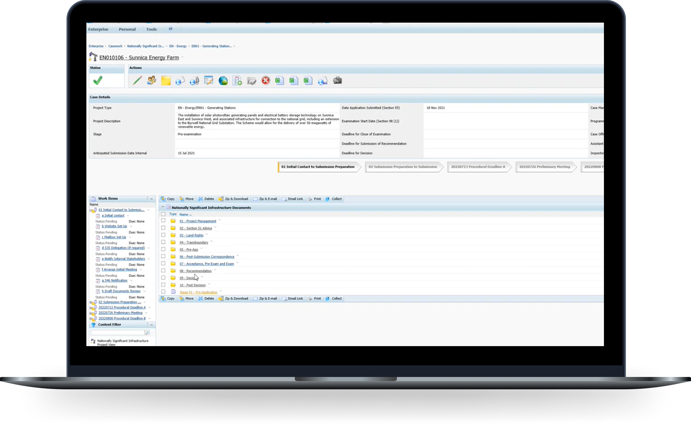
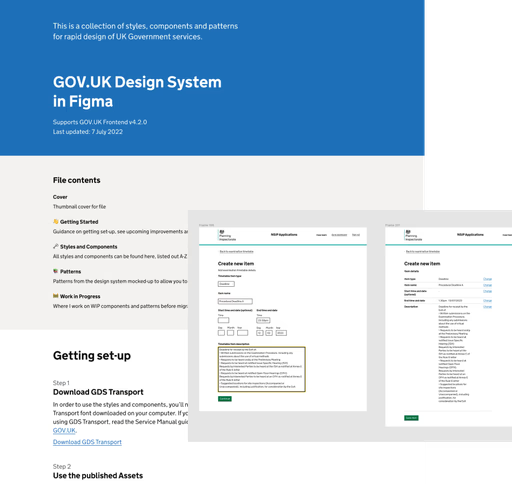
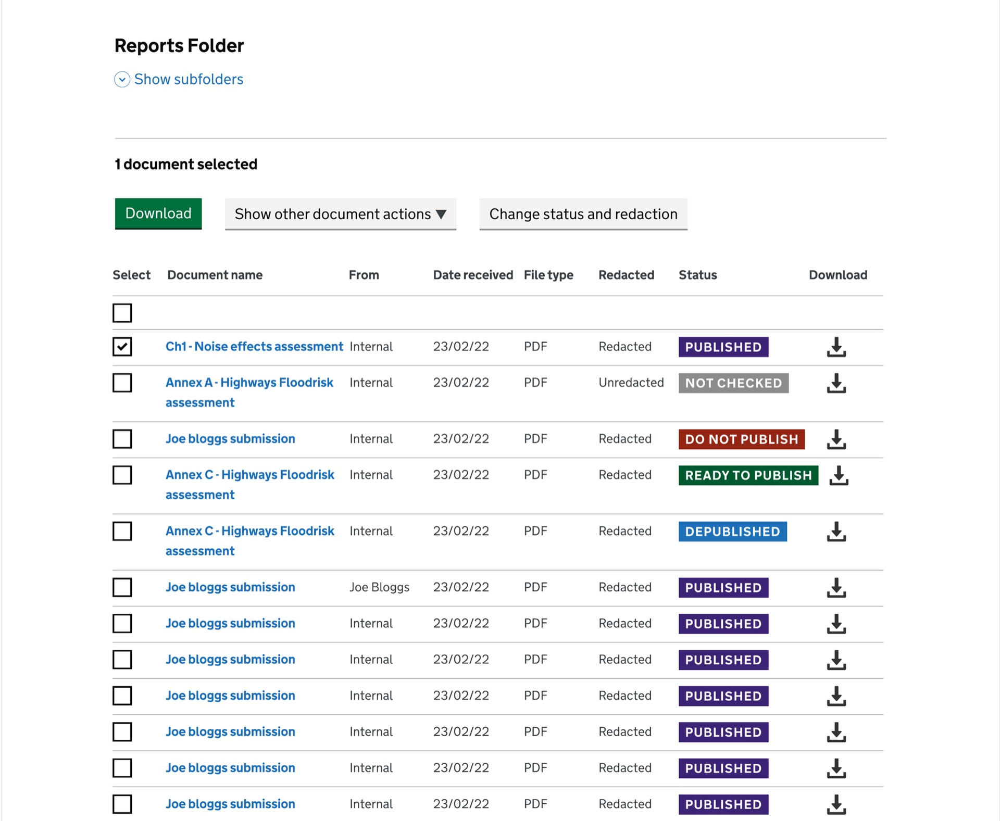
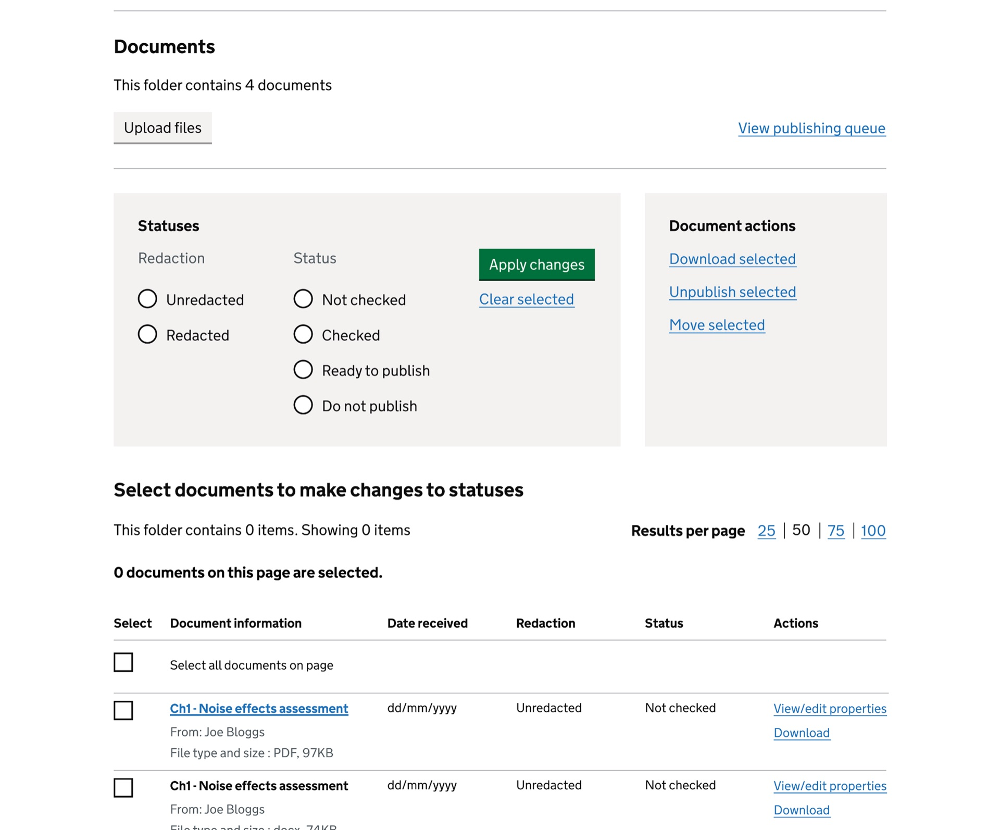
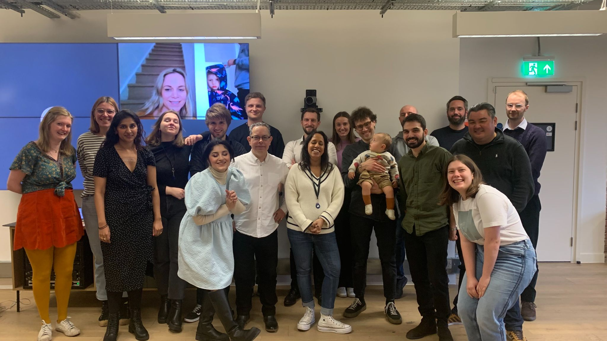
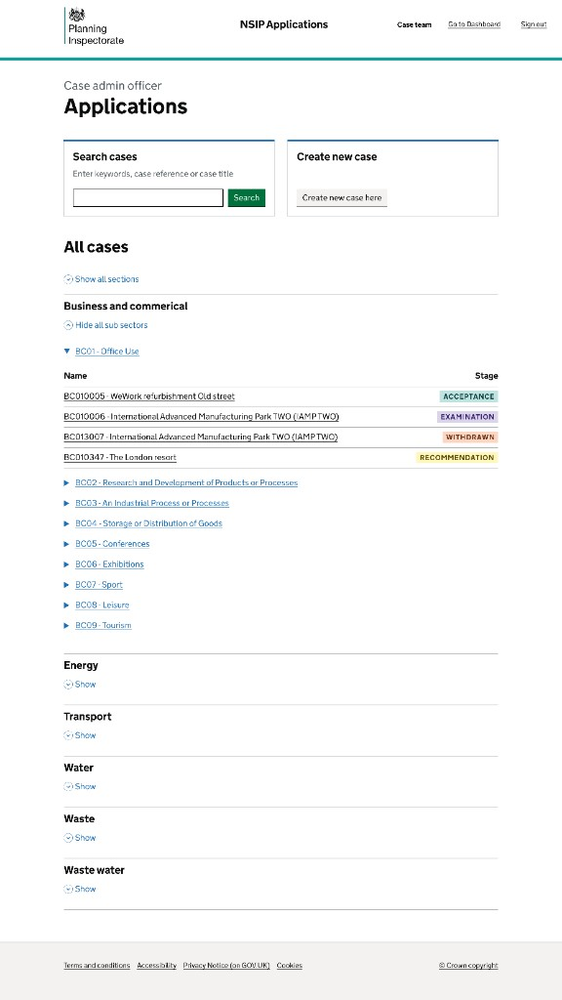
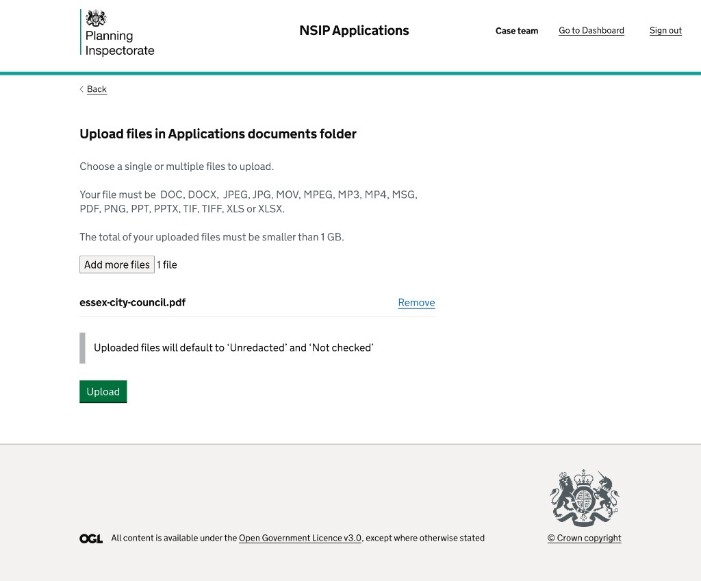
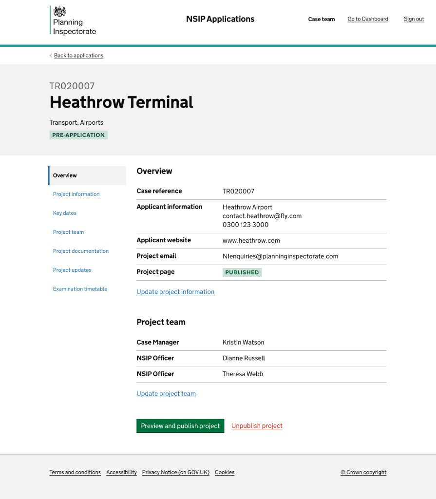

The Planning
Inspectorate.
The Planning Inspectorate oversees applications for major UK infrastructure projects, like wind farms and airport expansions.
As Lead UX Designer, I led the end-to-end design process to overhaul their legacy case management system, making it faster, simpler, and ready to scale.

What I delivered.
A creaking legacy system unfit for purpose.
The Planning Inspectorate's legacy system Horizon was used for managing and publishing planning application documentation. It was costing the government millions, had been in use for over 15 years and was nearing the end of its contract.
Not only that, the system wasn't built for purpose. The planning application process was incredibly slow, with applications often taking years to complete. Rather than easing the bottleneck, Horizon only compounded those delays.

Rebuild the system from scratch.
We were brought in to replace Horizon with something built for how case teams work today: move planning applications along faster, cut down on costly publishing mistakes, and give inspectors and admins a system they could actually rely on.
Speed up applications
Cut admin bottlenecks in the planning pipeline
Reduce errors & cost
Fewer publishing mistakes, less rework
Improve the experience
Built for inspectors and case teams day to day
Many roles, one sceptical system.
I had to learn complex planning workflows fast while designing for inspectors, case workers and other users, each with different responsibilities and levels of digital experience. Past failed transformations had left stakeholders wary of another agency-led change.
Interviews, workshops and stakeholder sessions mapped processes, roles and the politics around them.

Inefficient and time‑consuming processes.
Working within a complex system and tight deadline, I focused on high-impact decisions, what to keep and what to redesign. By mapping workflows and pain points and prioritising key opportunities, the Case Admin team emerged as the most critical group to improve.
Buried actions
Actions such as editing and publishing were buried behind multiple clicks, with high interaction costs.
Lack of status visibility
Documents had to be manually checked and renamed, with lack of visibility of status before redaction.
Inability to bulk edit
Every task had to be done one file at a time, adding to the workload and timeframe for completing the work.
Multiply this by thousands of files per case, the time and interaction costs were enormous.
If we enable the ability to edit and publish documents in bulk it will make it quicker to upload and publish files and speed up the planning application process.
Mapping out the file publishing flow to reduce steps.
Previously, every file had to be edited and published one by one. In the redesign, I streamlined the flow with bulk editing and publishing, cutting the steps down dramatically.
Legacy Horizon flow versus bulk-first steps in the redesign. Toggle Show changes to compare.
Applying standards while meeting user needs.
Because this was a GOV.UK service, I had to use the Government Design System to guarantee accessibility, inclusivity and consistency, and to cut down training needs. But case management is very different from the step-by-step form journeys the system is designed for. Since this wasn't public-facing, I had more flexibility. The challenge was knowing when to stick with GOV.UK patterns and when to adapt or extend them to better fit complex workflows.
Where components needed to deviate from the system, I evidenced this with robust research findings.

Sometimes showing more is better, early minimalism gave way to clarity.
Through four rounds of usability testing with case admin teams, I refined the document storage and publishing journey. Early minimalist designs evolved from feedback, with a stronger focus on easy access to core actions.

- Download/view CTAs unclear to users
- Colour coding too distracting for common tasks
- Bulk actions buried in a dropdown

- Neutral statuses - reducing visual noise while maintaining clarity.
- Bulk actions visible - improving task speed and reducing confusion.
- Clearer download/view CTAs with text labels
Giving case admin teams more control, and reducing errors with the publishing queue.
One of the core issues was the time taken to publish files and errors made along the way. I added new functionality to the publishing queue, collaborating with the front-office team so internal tooling lined up with what went live on the public site.
- Easy bulk management, speeding up processes and saving case team hours
- Edit files before publishing, reducing errors
- Full control over release order, reducing rework
Publishing queue interface: hover or tap a marker for design notes.

Status indicator to show which documents are in the process of publishing and cannot be edited.
Select or deselect which documents from the queue to publish immediately, either individually or in bulk, saving time.
View and edit document details before publishing, reducing errors.
Remove documents from the queue.
“That’s straightforward, and much easier than what we’re doing now.”
Delivering a fully redesigned system that speeds up the planning application process.
From this journey alone we were able to deliver on some of the key objectives set from the outset:
- Reduced upload/publishing time from days to minutes
- Improved SUS score by 35%
- Designed a system aligned with GDS, with bespoke components where needed
- Met business goals of accessibility and scalability
I was also able to win over sceptical users and stakeholders who had been hesitant at the start of the journey.
“We are so looking forward to everything being rolled out, you and the team are the first group of consultants who listen and deliver what we actually want, plus other good things thrown in as well.”
From a tiny team to a big team.
After a year growing the project from a small discovery team into a scaled operation, we delivered a fully redesigned system, from creating a case to publishing cases and documents on the Planning Inspectorate website, helping the agency secure a larger project during discovery.
The new system launched with its first live case in March 2024, fully integrated with the new public-facing Planning Inspectorate website.

“Zena has been driving the design and user interaction on the service… From a chaotic starting point, she’s gone above and beyond, engaging stakeholders, aligning the team and delivering with clarity.”
One small piece of a bigger body of work.
The file publishing process was just one small part of the system overhaul, which involved shipping 10+ epics, scaling and leading a design team and integrating with the public-facing website.
One learning that stood out was the importance of building strong relationships with stakeholders and users: the earlier you can build trust, the more willing people are to cooperate toward a shared goal.



